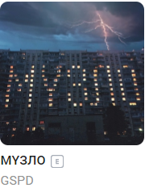

главная
история
инфаструктура
культура
обратная связь
музыкальная
подборка

11 ноября
Конкурс плакатов «Знать, чтобы жить», приуроченный ко Всемирному Дню борьбы со СПИДом
Приглашаем молодежь города участвовать в конкурсе плакатов «Знать, чтобы жить», приуроченному ко Всемирному Дню борьбы со СПИДом.
С целью повышения мотивации молодежи к ведению здорового образа жизни, формирования активной гражданской позиции подростков и молодежи
подробнее
12 ноября
Единый взнос на общеобязательное социальное страхование натерритории ДНР
Единый взнос на общеобязательное социальное страхование (далее - единый взнос) - страховой взнос, сбор которого осуществляется в систему общеобязательного социального страхования в обязательном порядке и на регулярной основе с целью обеспечения защиты в случаях,
подробнее
13 ноября
Объединенная Республиканская налоговая инспекция в г. Горловке Министерства
О необходимости правильного заполнения соответствующей информации в полях расчетных документов на перечисление налогов, сборов, страховых взносов и иных платежей в бюджетную систему Донецкой Народной Республики.
подробнее
14 ноября
Вниманию горловчан: отключение подачи водоснабжения
Горловское ПУВКХ «Компания «Вода Донбасса» информирует, что в связи с проведением ремонтных работ, что 11 ноября, с 09:00 до 17:00 не будет воды по улицам: Молодой Гвардии, Потемкина, Коротченко, Карамзина, Неделина и по проспекту Победы, 88.
Ясиноватское СМЭУ сообщает, что 11 нояюря, с 08:00 до окончания работ не будет воды по улицам: Покидько, Фадеева, 1-78 и в переулке Театральный, 2-6.
подробнее
15 ноября
Работы, выполненные сотрудниками КП «Простор» 10.11.20
10 ноября коммунальное предприятие «Простор» ежедневно выполняет все необходимые работы по содержанию городских улиц.
подробнее
Авторские права © 2020-2021 Администрация города Горловка. Все права защищены.
Использование материалов сайта «Администрация города Горловка» разрешается при условии активной ссылки на наш ресурс.